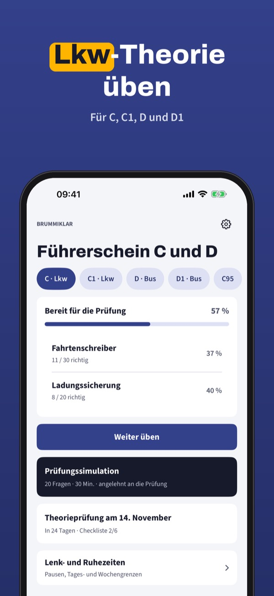
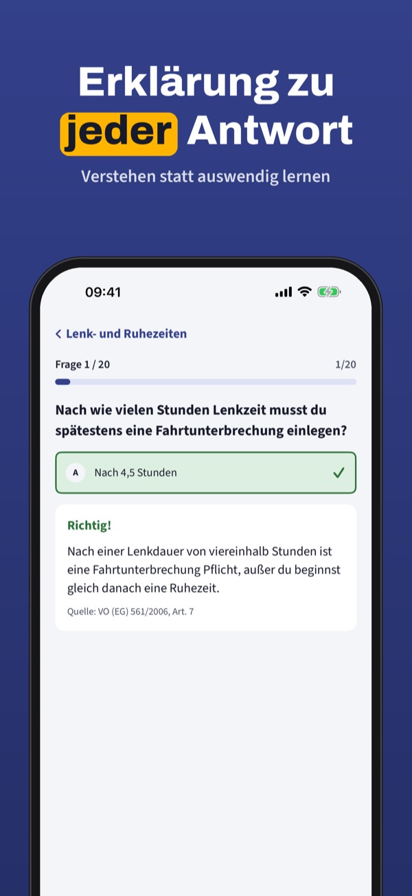
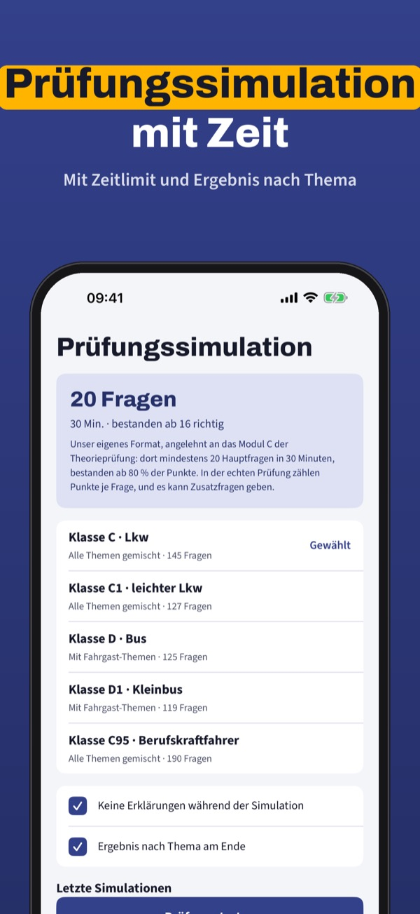

Theorie für C, C1, D und C95
Übe die Theorie für Lkw und Bus: eigene Fragen mit Erklärung, Prüfungssimulation und Lenk- und Ruhezeiten im Überblick – auf Deutsch und offline.



Brummiklar hilft dir, die Theorie für die Klassen C, C1, D und D1 in Österreich zu üben – mit eigenen Fragen nach Themen und dem Grundwissen für C95.
20 Fragen, die Begriffe und die Checkliste kannst du ohne Kauf nutzen. Die Vollversion ist ein Einmalkauf und schaltet alle Fragen, Simulationen und die Statistik frei. Kein Abo.
Brummiklar ist unabhängig, nicht mit Behörden verbunden und enthält nicht den amtlichen Fragenkatalog. Die Prüfung legst du über die Fahrschule ab.
Terms of Use (EULA): https://www.apple.com/legal/internet-services/itunes/dev/stdeula/
Privacy: https://baytechbv.github.io/privacy/lkw-theorie-at/